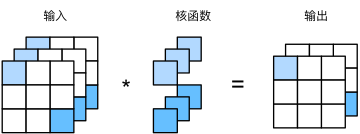

多输入多输出通道#
虽然我们在《全连接层到卷积》中描述了构成每个图像的多个通道和多层卷积层。例如彩色图像具有标准的RGB通道来代表红、绿和蓝。 但是到目前为止，我们仅展示了单个输入和单个输出通道的简化例子。 这使得我们可以将输入、卷积核和输出看作二维张量。
当我们添加通道时，我们的输入和隐藏的表示都变成了三维张量。例如，每个RGB输入图像具有\(3\times h\times w\)的形状。我们将这个大小为\(3\)的轴称为通道（channel）维度。
多输入通道#
在下图中，我们演示了一个具有两个输入通道的二维互相关运算的示例。每个通道都有一个卷积核，结果是所有通道卷积结果的和：\((1\times1+2\times2+4\times3+5\times4)+(0\times0+1\times1+3\times2+4\times3)=56\)。

为了加深理解，我们实现一下多输入通道互相关运算。 简而言之，我们所做的就是对每个通道执行互相关操作，然后将结果相加。
import torch
from d2l import torch as d2l
def corr2d_multi_in(X, K):
# 先遍历“X”和“K”的第0个维度（通道维度），再把它们加在一起
return sum(d2l.corr2d(x, k) for x, k in zip(X, K))
我们可以构造与上图中的值相对应的输入张量X和核张量K，以验证互相关运算的输出。
X = torch.tensor([[[0.0, 1.0, 2.0], [3.0, 4.0, 5.0], [6.0, 7.0, 8.0]],
[[1.0, 2.0, 3.0], [4.0, 5.0, 6.0], [7.0, 8.0, 9.0]]])
K = torch.tensor([[[0.0, 1.0], [2.0, 3.0]], [[1.0, 2.0], [3.0, 4.0]]])
corr2d_multi_in(X, K)
tensor([[ 56., 72.],
[104., 120.]])
相关公式#
输入\(\mathbf{X}: c_{i} \times n_{h} \times n_{w}\)
核\(\mathbf{W}: c_{i} \times k_{h} \times k_{w}\)
输出\(\mathbf{Y}: m_{h} \times m_{w}\)
多输出通道#
不论有多少输入通道，到目前为止我们只用到单输出通道。我们可以有多个三维卷积核，每个核生成一个输出通道
用\(c_i\)和\(c_o\)分别表示输入和输出通道的数目，并让\(k_h\)和\(k_w\)为卷积核的高度和宽度。为了获得多个通道的输出，我们可以为每个输出通道创建一个形状为\(c_i\times k_h\times k_w\)的卷积核张量，这样卷积核的形状是\(c_o\times c_i\times k_h\times k_w\)。在互相关运算中，每个输出通道先获取所有输入通道，再以对应该输出通道的卷积核计算出结果。
如下所示，我们实现一个计算多个通道的输出的互相关函数。
def corr2d_multi_in_out(X, K):
# 迭代“K”的第0个维度，每次都对输入“X”执行互相关运算。
# 最后将所有结果都叠加在一起
return torch.stack([corr2d_multi_in(X, k) for k in K], 0)
通过将核张量K与K+1（K中每个元素加\(1\)）和K+2连接起来，构造了一个具有\(3\)个输出通道的卷积核。
K = torch.stack((K, K + 1, K + 2), 0)
K.shape
torch.Size([3, 2, 2, 2])
下面，我们对输入张量X与卷积核张量K执行互相关运算。现在的输出包含\(3\)个通道，第一个通道的结果与先前输入张量X和多输入单输出通道的结果一致。
corr2d_multi_in_out(X, K)
tensor([[[ 56., 72.],
[104., 120.]],
[[ 76., 100.],
[148., 172.]],
[[ 96., 128.],
[192., 224.]]])
相关公式#
输入\(\mathbf{X}: c_{i} \times n_{h} \times n_{w}\)
核\(\mathbf{W}: c_{o} \times c_{i} \times k_{h} \times k_{w}\)
输出\(\mathbf{Y}: {c_{o}} \times m_{h} \times m_{w}\)
\(1\times 1\) 卷积层#
\(1 \times 1\)卷积，即\(k_h = k_w = 1\)，看起来似乎没有多大意义。 毕竟，卷积的本质是有效提取相邻像素间的相关特征，而\(1 \times 1\)卷积显然没有此作用。 尽管如此，\(1 \times 1\)仍然十分流行，经常包含在复杂深层网络的设计中。下面，让我们详细地解读一下它的实际作用。
因为使用了最小窗口，\(1\times 1\)卷积失去了卷积层的特有能力——在高度和宽度维度上，识别相邻元素间相互作用的能力。 其实\(1\times 1\)卷积的唯一计算发生在通道上。
我们在多输出通道展示了使用\(1\times 1\)卷积核与\(3\)个输入通道和\(2\)个输出通道的互相关计算。 这里输入和输出具有相同的高度和宽度，输出中的每个元素都是从输入图像中同一位置的元素的线性组合。 我们可以将\(1\times 1\)卷积层看作在每个像素位置应用的全连接层，以\(c_i\)个输入值转换为\(c_o\)个输出值。 因为这仍然是一个卷积层，所以跨像素的权重是一致的。 同时，\(1\times 1\)卷积层需要的权重维度为\(c_o\times c_i\)，再额外加上一个偏置。
下面，我们使用全连接层实现\(1 \times 1\)卷积。 请注意，我们需要对输入和输出的数据形状进行调整。
def corr2d_multi_in_out_1x1(X, K):
c_i, h, w = X.shape
c_o = K.shape[0]
X = X.reshape((c_i, h * w))
K = K.reshape((c_o, c_i))
# 全连接层中的矩阵乘法
Y = torch.matmul(K, X)
return Y.reshape((c_o, h, w))
当执行\(1\times 1\)卷积运算时，上述函数相当于先前实现的互相关函数corr2d_multi_in_out。让我们用一些样本数据来验证这一点。
X = torch.normal(0, 1, (3, 3, 3))
K = torch.normal(0, 1, (2, 3, 1, 1))
Y1 = corr2d_multi_in_out_1x1(X, K)
Y2 = corr2d_multi_in_out(X, K)
assert float(torch.abs(Y1 - Y2).sum()) < 1e-6
二维卷积层#
输入\(\mathbf{X}: c_{i} \times n_{h} \times n_{w}\)
核\(\mathbf{W}: c_{o} \times c_{i} \times k_{h} \times k_{w}\)
偏差\(B : c_{o} \times c_{i}\)
输出\(\mathbf{Y}: c_{o} \times m_{h} \times m_{w}\)
计算复杂度：\(O\left(c_{i} c_{o} k_{h} k_{w} m_{h} m_{w}\right)\)
10 层，1M样本，10 PFlops
\(\text {(CPU: 0.15 TF = 18h, GPU: } 12 \mathrm{TF}=14 \mathrm{~min})\)